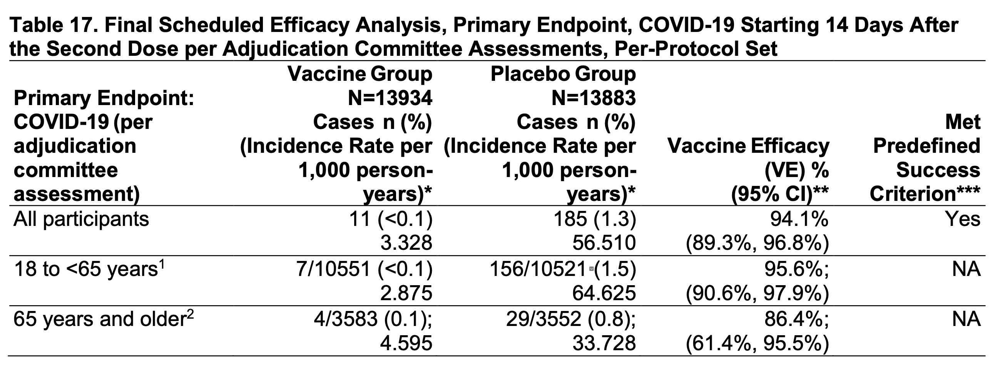

Why do we learn statistics?
Why, why, why???
Is there a place for statistics in your life?
First reason…
valid argument — believable conclusion
No cigarettes are inexpensive
Some addictive things are inexpensive
Therefore, some addictive things are not cigarettes valid argument — less believable conclusion
No addictive things are inexpensive
Some cigarettes are inexpensive
Therefore, some cigarettes are not addictive invalid argument — believable conclusion
No addictive things are inexpensive
Some cigarettes are inexpensive
Therefore, some addictive things are not cigarettes invalid argument — less believable conclusion
No cigarettes are inexpensive
Some addictive things are inexpensive
Therefore, some cigarettes are not addictive When intuitions clash with logic
Evans et al (1983)
| conclusion feels true | conclusion feels false | |
|---|---|---|
| argument is valid | 92% say “valid” | 46% say “valid” |
| argument is invalid | 92% say “valid” | 8% say “valid” |
Why? Why? Why???
Reason #1:
It’s just too easy for us to “believe what we want to believe”.
Sidebar: How we do know what “feels true”?

Evans et al (1983)
Second reason…
Berkeley College 1973 admissions data
| Number of applicants | Percent admitted | |
|---|---|---|
| Males | 8442 | 46% |
| Females | 4321 | 35% |
Berkeley College 1973 admissions data
| Department | Male Applicants | Male Percent Admitted | Female Applicants | Female Percent Admitted |
|---|---|---|---|---|
| A | 825 | 62% | 108 | 82% |
| B | 560 | 63% | 25 | 68% |
| C | 325 | 37% | 593 | 34% |
| D | 417 | 33% | 375 | 35% |
| E | 191 | 28% | 393 | 24% |
| F | 272 | 6% | 341 | 7% |

Source: Bickel et al (1975)
Why? Why? Why???
Reason #2:
Science is hard, and the truth is sometimes cunningly hidden in the nooks and crannies of complicated data.
Third reason…

Why? Why? Why???
Reason #3:
The “things” that we study are people, and people are complicated.
Fourth reason…
Why? Why? Why???

Source: https://xkcd.com/2400
Why? Why? Why???

Source: https://www.fda.gov/media/144434/download
Why? Why? Why???

Why? Why? Why???
Reason #4:
Statistical literacy can help us make important life decisions.
References
Bickel, P. J., Hammel, E. A., & O’Connell, J. W. (1975). Sex bias in graduate admissions: Data from Berkeley. Science, 187(4175), 398-404.
Evans, J. S. B., Barston, J. L., & Pollard, P. (1983). On the conflict between logic and belief in syllogistic reasoning. Memory & cognition, 11(3), 295-306.
Navarro, D., & Weed, E. (2021). Learning statistics with python: A tutorial for psychology students and other beginners[Available online: https://ethanweed.github.io/pythonbook]